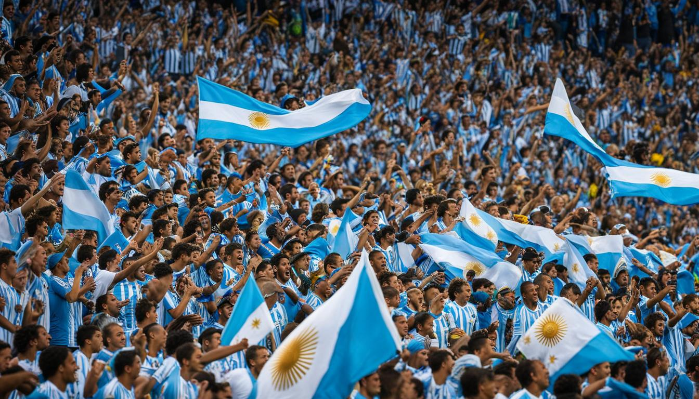
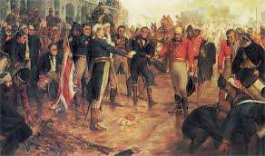

GEOGRAPHY

Argentina is a vast country located in the southern part of South America. The eighth largest country in the world, it is the second largest country in South America after Brazil, and it's about one-third the size of the United States. Argentina is bordered by the Andes Mountains and Chile to the west. To the east of the Andes, the interior of the country is flat, fertile grassland called the Pampas. The eastern border of the country is the Atlantic Ocean. Bolivia is to the northwest and Paraguay is to the north. The high mountain spine of the Andes, called the Andes Cordillera, creates a natural 3,195-mile (5,141.9-kilometer) border with Chile. The country is divided into four regions: The Andes, the North, the Pampas, and Patagonia. The Pampas is the agricultural heartland.
PEOPLE AND CULTURE
Unlike Mexico and South American countries such as Peru and Ecuador, Argentina has fewer native people and a large population, which came from Europe. The population is comprised as much as 95% of people of European descent, mostly from Italy, Spain, and Germany. Much of the native population died from diseases brought in by Europeans. Nearly half of the population lives in the area around Buenos Aires. Buenos Aires has been called the "Paris of South America," because of the European influences. The people are well-educated and 97% of the population can read and write. Soccer is the favorite sport in Argentina. Gauchos, like American cowboys, have been a symbol of the open plains of the Pampas region.
NATURE

Argentina is rich in animal species. The coast of Patagonia is home to elephant seals, fur seals, penguins, and sea lions. The waters off the Atlantic are home to sharks, orcas, dolphins, and salmon. In the north, there are many large cat species such as the cougar, jaguar, and the ocelot. There are also crocodiles and caiman. Flamingos, toucans, turtles, and tortoises also live in the subtropical north. Patagonia is a sparsely populated area rich in natural resources and wildlife, including herons, condors, pumas, tortoises, and guanacos. The highest mountain in the Andes range is the Cerro Aconcagua, which peaks at 22,384 feet (6,960 meters). Northeast Argentina features rain forests and Iguazù Falls. These spectacular falls, on Argentina's border with Brazil, descend along a 1.6-mile (2.7-kilometer) front in a horseshoe shape. As the country develops it is being affected by deforestation and pollution.
HISTORY
The Spanish arrived in 1516 and ruled the country for 300 years. In 1806, a British force overpowered Spanish military in Buenos Aires and attacked the Malvinas Islands, also called the Falkland Islands. Local residents recaptured the capital, but never regained control of the islands. These events led to the loosening of Spain's grip on Argentina. In 1810, Napoleon's forces conquered all major Spanish cities in Spain and the Argentine people were empowered to take control of their country. They gained independence in 1816. In 1946, Juan Perón became president due to his popularity with the working class. His wife, Eva, known as Evita, formed a foundation and gave out cash and benefits to the poor. When she died of cancer in 1952, the people were very sad. She was a symbol of hope to all the poor in Argentina. Juan Perón was forced out of office after he tried to increase his powers. Even after he left office, his followers continued to fight for political power. After many violent years and near civil war, Perón was re-elected president and his new wife, Isabel, became vice president. He died suddenly and Isabel became president and soon the country's economy fell apart. The military took control of the country in 1976, and a period of violence called the "dirty war" ensued, during which as many as 20,000-30,000 revolutionaries or sympathizers were killed. In 1982, the president of Argentina, General Leopoldo Galtieri invaded the Falkland Islands off the coast in the Atlantic Ocean thinking the British wouldn't put up a fight. Galtieri miscalculated and British forces won an easy victory. After the defeat, the country moved toward democracy and civilian rule.